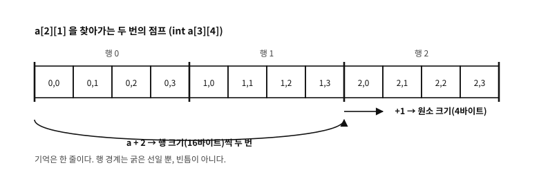

40 다차원 배열
먼저 알아야 할 것
돌아보기
39장에서 a[i]가 *(a + i)의 동의어이고, 포인터에 정수를 더하면 가리키는 타입의 크기만큼 움직인다고 했다. 그러면 int a[3][4]에서 a + 1은 몇 바이트를 움직이는가?
답. 16바이트 — int 하나(4)가 아니라 int 넷짜리 행 하나다. 열쇠는 a의 원소가 무엇인가에 있다. int a[3][4]는 “int 4개짜리 배열이 3개”이고, 따라서 a의 원소 하나는 행 전체(int[4])다. 39장의 규칙은 하나도 바뀌지 않았다 — “원소 하나만큼 움직인다”가 그대로 적용됐을 뿐인데, 그 원소가 배열인 것이다.
이 장은 그 한 문장에서 자라 나오는 모든 것이다.
이 장의 필요성과 맥락
이 장이 끝나면
int **가 아닌지, 같은 주소를 다른 타입으로 보는 것이 어디까지 허용되는지, 그리고 실무의 패턴들(선행 차원, 행 포인터, 스트라이드)과 행렬 계산에서의 순회 순서, 그리고 다차원이라서 새로 생기는 사고들(행 넘침, 첨자 셈의 넘침, 스택 부족)까지 본다.이 장에서 답할 질문
- 그러면 열 우선(column-major)으로 두는 언어도 있는가?
- 그러면
a[i][j]와a[j][i]는 왜 다른 자리인가? 둘 다 결국 덧셈 아닌가? int *p = &a[0][0];로 받아p[7]처럼 평탄하게 훑어도 되는가? 어차피 같은 기억이고, 오프셋도 맞는데.- 간격을 따로 두면 좋은 점이 부분행렬뿐인가?
40.1 다차원 배열이란 — 표와 격자를 담는 법#
세상의 자료 가운데 상당수는 한 줄이 아니라 표다. 시간표는 요일 × 교시, 성적표는 학생 × 과목, 바둑판은 19 × 19, 사진은 세로 화소 × 가로 화소, 스프레드시트는 행 × 열이다. 이런 자료에서 칸 하나를 가리키려면 번호가 둘 필요하다 — 「3행 2열」처럼.
39장의 배열로도 담을 수는 있다. 칸을 한 줄로 늘어놓고 「r 행 c 열은 r * 열수 + c 번째」라고 손으로 셈하면 된다. 그러나 그 셈을 칸에 접근할 때마다 적어야 하고, 열 수를 하나 잘못 적으면 엉뚱한 칸을 읽는다. 다차원 배열(multidimensional array)은 그 셈을 컴파일러에게 맡기는 표기다. grade[r][c] 라고 쓰면 번호 둘로 칸을 찾아 준다.
엄밀한 정의는 따로 없다 — 그것이 이 장의 첫 번째 요점이다. 표준의 타입 목록에 「다차원 배열 타입」이라는 갈래는 없고, 39장에서 읽은 배열의 정의(「T 의 배열」)를 원소 타입 자리에 다시 배열을 넣어 한 번 더 적용한 것이 전부다. 표준은 첨자 연산을 설명하는 자리에서 이 사실을 이렇게 적는다.
“ 잇따른 첨자 연산자는 다차원 배열 객체의 한 원소를 지정한다. … 이로부터 배열은 행 우선 순서로(마지막 첨자가 가장 빨리 변하도록) 저장된다는 것이 따라 나온다.1 ”
그래서 이 장에 새 규칙은 거의 없다. 배열의 규칙 — 연속된 배치, 첨자 = 포인터 산술, 매개변수에서의 무너짐 — 이 원소가 배열일 때 어떻게 보이는지를 차례로 확인할 뿐이다.
40.2 배열의 배열 — 실체부터#
int a[3][4]를 읽는 법은 하나뿐이다. int 4개짜리 배열이 3개. “3행 4열”은 사람의 해석이고, 타입이 말하는 것은 “원소가 int[4]인 배열”이다.
examples/arrays-2d/md_layout.c
/* 다차원 배열의 실체 — 크기, 주소, 그리고 첨자가 풀리는 과정. */
#include <stdio.h>
int main(void)
{
int a[3][4] = {
{ 11, 12, 13, 14 },
{ 21, 22, 23, 24 },
{ 31, 32, 33, 34 },
};
/* ── ① 무엇이 몇 개인가 ──────────────────────────────── */
printf("sizeof a = %2zu (3 rows of 4 ints)\n", sizeof a);
printf("sizeof a[0] = %2zu (one row = 4 ints)\n", sizeof a[0]);
printf("sizeof a[0][0] = %2zu (one element)\n\n", sizeof a[0][0]);
/* ── ② 기억은 한 덩어리다 — row-major ────────────────── */
printf("addresses as byte offsets:\n");
const char *base = (const char *)&a[0][0];
for (int i = 0; i < 3; i++) {
printf(" row %d:", i);
for (int j = 0; j < 4; j++)
printf(" a[%d][%d]=+%02td", i, j, (const char *)&a[i][j] - base);
printf("\n");
}
printf(" the last subscript varies fastest (row-major).\n\n");
/* ── ③ 첨자식이 풀리는 과정 — a[2][1] 을 손으로 ───────── */
puts("resolving a[2][1] step by step (addresses are byte offsets from a):");
printf(" a type int(*)[4], +%td\n",
(const char *)a - base);
printf(" a + 2 one step = sizeof(int[4]) = %zu -> +%zu, offset +%td\n",
sizeof(int[4]), 2 * sizeof(int[4]), (const char *)(a + 2) - base);
printf(" *(a + 2) type int[4] -> decays to int*, offset +%td\n",
(const char *)*(a + 2) - base);
printf(" *(a+2) + 1 one step = sizeof(int) = %zu -> +%zu, offset +%td\n",
sizeof(int), 1 * sizeof(int), (const char *)(*(a + 2) + 1) - base);
printf(" *(*(a+2)+1) value = %d, a[2][1] = %d (the same)\n\n",
*(*(a + 2) + 1), a[2][1]);
/* ── ④ 같은 주소, 다른 타입 ──────────────────────────── */
printf("a, a[0], &a[0][0] and &a are all the same address (offset 0):\n");
printf(" a +%td (int(*)[4])\n", (const char *)a - base);
printf(" a[0] +%td (int*)\n", (const char *)a[0] - base);
printf(" &a[0][0] +%td (int*)\n", (const char *)&a[0][0] - base);
printf(" &a +%td (int(*)[3][4])\n", (const char *)&a - base);
printf("but one step means a different size for each:\n");
printf(" a + 1 -> +%td bytes (one row)\n",
(const char *)(a + 1) - (const char *)a);
printf(" a[0] + 1 -> +%td bytes (one element)\n",
(const char *)(a[0] + 1) - (const char *)a[0]);
printf(" &a + 1 -> +%td bytes (the whole array)\n",
(const char *)(&a + 1) - (const char *)&a);
return 0;
}
실행 결과
sizeof a = 48 (3 rows of 4 ints)
sizeof a[0] = 16 (one row = 4 ints)
sizeof a[0][0] = 4 (one element)
addresses as byte offsets:
row 0: a[0][0]=+00 a[0][1]=+04 a[0][2]=+08 a[0][3]=+12
row 1: a[1][0]=+16 a[1][1]=+20 a[1][2]=+24 a[1][3]=+28
row 2: a[2][0]=+32 a[2][1]=+36 a[2][2]=+40 a[2][3]=+44
the last subscript varies fastest (row-major).
resolving a[2][1] step by step (addresses are byte offsets from a):
a type int(*)[4], +0
a + 2 one step = sizeof(int[4]) = 16 -> +32, offset +32
*(a + 2) type int[4] -> decays to int*, offset +32
*(a+2) + 1 one step = sizeof(int) = 4 -> +4, offset +36
*(*(a+2)+1) value = 32, a[2][1] = 32 (the same)
a, a[0], &a[0][0] and &a are all the same address (offset 0):
a +0 (int(*)[4])
a[0] +0 (int*)
&a[0][0] +0 (int*)
&a +0 (int(*)[3][4])
but one step means a different size for each:
a + 1 -> +16 bytes (one row)
a[0] + 1 -> +4 bytes (one element)
&a + 1 -> +48 bytes (the whole array)
시연의 첫 묶음이 그 확인이다. sizeof a는 48(전체), sizeof a[0]은 16(행 하나), sizeof a[0][0]은 4(원소 하나)다. 즉 a의 원소는 행이고, 행의 원소가 정수다.
a 가 차지하는 기억은 한 덩어리다. 두 번째 묶음의 오프셋을 보면 a[0][0]부터 a[2][3]까지 0, 4, 8 … 44로 빈틈없이 이어진다. 표준은 이 배치를 못박아 둔다 — 마지막 첨자가 가장 빨리 변한다(row-major, 행 우선). 다차원 배열이라고 해서 기억이 격자로 접히는 것이 아니라, 행을 차례로 이어 붙인 한 줄이다.
문. 그러면 열 우선(column-major)으로 두는 언어도 있는가?
답. 있다. 포트란이 대표이고, MATLAB·R·줄리아, 그리고 OpenGL의 행렬 관례가 열 우선이다. 어느 쪽이 옳은 것이 아니라 약속이며, C는 행 우선을 골랐다.
이 차이가 실무에서 문제가 되는 자리는 분명하다 — 포트란으로 쓰인 수치 라이브러리(BLAS·LAPACK)를 C에서 부를 때다. 같은 기억을 서로 다른 순서로 읽으므로, 그대로 넘기면 전치된 행렬을 넘기는 셈이 된다. 그래서 그 계열의 API에는 “이 행렬은 전치해서 보라”는 인자(CblasRowMajor / CblasColMajor, 또는 trans 플래그)가 거의 언제나 붙어 있다.
40.3 첨자식이 풀리는 과정#
a[i][j]는 마법이 아니다. 39장의 규칙 두 개를 두 번 적용한 것뿐이다.
한 단계씩, 타입과 함께 따라가면 이렇다.
| 수식 | 타입 | 한 걸음의 크기 |
|---|---|---|
a | int[3][4] → 무너져 int (*)[4] | — |
a + i | int (*)[4] | sizeof(int[4]) = 16바이트 |
*(a + i) | int[4] → 무너져 int * | — |
*(a + i) + j | int * | sizeof(int) = 4바이트 |
*(*(a + i) + j) | int (좌변값) | — |
표 40.1 — 다차원 첨자식이 풀리는 단계
시연의 세 번째 묶음이 이 표를 실제 수로 보여 준다. a + 2가 오프셋 +32(=2 × 16), *(a+2) + 1이 +36(=32 + 1 × 4). 그래서 a[2][1]의 값이 나온다.
여기에 새 규칙은 없다. 39장에서 “포인터 + 정수는 원소 크기만큼 움직인다”고 했고, 그 원소가 이번에는 int[4]였을 뿐이다. 다차원 배열이 어려워 보이는 이유의 절반은 이 사실을 놓치기 때문이다.

그림 40.1 — a[2][1]을 찾아가는 두 번의 점프 — 행 크기로 한 번, 원소 크기로 한 번.
문. 그러면 a[i][j]와 a[j][i]는 왜 다른 자리인가? 둘 다 결국 덧셈 아닌가?
답. 덧셈이지만 곱해지는 값이 다르다. 오프셋을 바이트로 풀어 쓰면 i × 16 + j × 4다. i에 붙는 계수(행의 크기)와 j에 붙는 계수(원소의 크기)가 다르므로, 둘을 바꾸면 다른 자리가 된다 — a[1][2]는 +24, a[2][1]은 +36이다.
일반화하면 차원 배열 T a[d_1][d_2]...[d_n]에서 a[i_1]...[i_n]의 오프셋은
이다. 안쪽 차원의 크기들이 전부 계수로 들어오므로, 가장 바깥 차원의 크기만은 계산에 쓰이지 않는다 — 그래서 매개변수에서 첫 차원만 생략할 수 있다(다음 절).
40.4 매개변수 — 왜 int **가 아닌가#
39장에서 “매개변수의 배열은 포인터로 무너지되 가장 바깥 차원만 벗겨진다”고 했다. 다차원에서 그 규칙이 실제로 무엇을 뜻하는지 보자.
void f(int m[3][4]); /* 셋은 컴파일러에게 완전히 같은 선언이다 */
void f(int m[][4]);
void f(int (*m)[4]);바깥 차원 3은 사라지고 4는 남는다. 앞 절의 오프셋 식이 그 이유다 — 자리를 계산하는 데 필요한 것은 안쪽 차원들이고, 바깥 차원은 쓰이지 않는다. 그래서 안쪽 차원은 반드시 적어야 하고(int m[][]는 컴파일되지 않는다), 바깥은 적어도 검사되지 않는다.
examples/arrays-2d/md_param.c
/* 2차원 배열을 함수에 넘기는 세 가지 배치 — 그리고 왜 int** 가 아닌가. */
#include <stdio.h>
#include <stdlib.h>
/* ① 폭이 고정된 2차원: 안쪽 차원은 타입에 남는다.
셋은 컴파일러에게 완전히 같은 선언이다. */
static int sum_fixed(int m[3][4]) { int s = 0; for (int i=0;i<3;i++) for (int j=0;j<4;j++) s += m[i][j]; return s; }
/* 다음 둘은 위와 *완전히 같은* 선언이다(본문 참조):
static int sum_fixed(int m[][4]);
static int sum_fixed(int (*m)[4]); */
/* ② VLA 매개변수(C99): 폭을 실행 중에 받는다 — 수치 코드의 정공법 */
static int sum_vla(size_t rows, size_t cols, const int a[rows][cols])
{
int s = 0;
for (size_t i = 0; i < rows; i++)
for (size_t j = 0; j < cols; j++) s += a[i][j];
return s;
}
/* ③ 행 포인터의 배열: 배치가 아예 다르다 — 행마다 따로 살 수 있다 */
static int sum_rows(size_t rows, size_t cols, int *const rowp[rows])
{
int s = 0;
for (size_t i = 0; i < rows; i++)
for (size_t j = 0; j < cols; j++) s += rowp[i][j];
return s;
}
int main(void)
{
int a[3][4] = { {1,2,3,4}, {5,6,7,8}, {9,10,11,12} };
printf("① fixed width sum_fixed(a) = %d\n", sum_fixed(a));
printf("② VLA parameter sum_vla(3,4,a) = %d\n", sum_vla(3, 4, a));
/* 행 포인터 배열을 만들어 같은 자료를 가리키게 한다 */
int *rowp[3] = { a[0], a[1], a[2] };
printf("③ row pointers sum_rows(3,4,rowp) = %d\n\n", sum_rows(3, 4, rowp));
/* 배치의 차이를 눈으로 */
printf("the layouts differ:\n");
printf(" a : int[3][4] - one block of %zu bytes, 0 indirections\n", sizeof a);
printf(" rowp : int*[3] - %zu bytes of pointers plus the rows, 1 indirection\n", sizeof rowp);
/* 행 교환의 비용이 갈린다 */
int *tmp = rowp[0]; rowp[0] = rowp[2]; rowp[2] = tmp; /* 포인터 두 개만 바뀐다 */
printf("\nswapping row pointers leaves the data alone and changes the order: ");
for (size_t j = 0; j < 4; j++) printf("%d ", rowp[0][j]);
printf("\n (doing the same to a 2-D array would really move 16 bytes)\n");
/* 들쭉날쭉한 행 — 2차원 배열로는 못 하는 배치 */
int r0[] = { 1 }, r1[] = { 2, 3, 4 };
int *jag[2] = { r0, r1 };
size_t len[2] = { 1, 3 };
printf("\njagged rows: ");
for (size_t i = 0; i < 2; i++)
for (size_t j = 0; j < len[i]; j++) printf("%d ", jag[i][j]);
printf("\n");
return 0;
}
실행 결과
① fixed width sum_fixed(a) = 78
② VLA parameter sum_vla(3,4,a) = 78
③ row pointers sum_rows(3,4,rowp) = 78
the layouts differ:
a : int[3][4] - one block of 48 bytes, 0 indirections
rowp : int*[3] - 24 bytes of pointers plus the rows, 1 indirection
swapping row pointers leaves the data alone and changes the order: 9 10 11 12
(doing the same to a 2-D array would really move 16 bytes)
jagged rows: 1 2 3 4
흔한 오해. “2차원 배열은 int **로 받으면 된다”
가장 흔하고 가장 비싼 오해다. int a[3][4]가 무너지면 int (*)[4]이지 int **가 아니다. 둘은 기억 배치가 아예 다르다.
int (*)[4]는 “정수가 12개 줄지어 있는 곳”의 첫 행을 가리킨다. 주소 하나로 모든 칸을 계산해 낸다. 반면 int **는 “정수를 가리키는 포인터들이 줄지어 있는 곳”을 가리킨다 — 자리를 알려면 주소를 두 번 따라가야 하고, 그 포인터 배열이 실제로 있어야 한다.
그래서 진짜 2차원 배열을 int **를 받는 함수에 넘기면 컴파일러가 거절한다. 거절을 캐스트로 눌러 넘기면 정수 몇 개를 주소로 착각해 따라가는, 진단도 나오지 않는 붕괴가 된다. 시연의 the layouts differ: 묶음이 두 배치의 크기와 간접 참조 횟수를 나란히 보여 준다.
VLA(variable-length array) 매개변수가 이 자리에서 빛을 발한다(39장). 폭이 실행 중에 정해져도 a[i][j] 표기를 그대로 쓸 수 있다.
void sum(size_t rows, size_t cols, const int a[rows][cols]);크기를 앞에 받는 것이 규칙이다 — 뒤에 오는 차원 이름이 이미 선언되어 있어야 하기 때문이다. 이것이 오늘날 수치 코드에서 가장 읽기 좋은 형태이고, 이 책이 권하는 기본값이다.
40.5 같은 주소, 다른 눈 — 평탄화의 계약#
첫 시연(md_layout.c)의 마지막 묶음이 이 절의 출발점이다. a, a[0], &a[0][0], &a는 모두 같은 주소다. 그러나 타입이 다르므로 한 걸음의 크기가 다르다 — 각각 16, 4, 4, 48바이트다. 같은 번호를 들고 있어도 그 번호로 할 수 있는 일이 다르다(36장의 “주소는 그냥 정수가 아니다”가 여기서 실물이 된다).
그렇다면 주소가 같으니 int * 하나로 2차원 배열 전체를 평탄하게 훑어도 되는가 하는 질문이 자연스럽게 나온다.
문. int *p = &a[0][0]; 로 받아 p[7]처럼 평탄하게 훑어도 되는가? 어차피 같은 기억이고, 오프셋도 맞는데.
답. 거의 모든 컴파일러에서 돌아가지만, 표준의 글자로는 계약 밖이다. 이유를 정확히 나누어 보아야 한다 — 두 규칙이 얽혀 있는데 걸리는 것은 하나뿐이다.
엄격한 앨리어싱(§6.5.1p7)은 문제가 아니다. 이 규칙은 “객체의 유효 타입과 맞지 않는 타입의 좌변값으로 읽지 말라”는 것인데, 여기서 읽는 대상인 a[i][j]의 유효 타입은 어느 쪽으로 접근하든 int다. int 좌변값으로 읽으니 규칙을 어기지 않는다.
걸리는 것은 포인터 산술의 범위다(§6.5.7, 그리고 38장의 프로버넌스). &a[0][0]은 a[0]이라는 원소 4개짜리 배열의 첫 원소를 가리킨다. 그 포인터로 갈 수 있는 곳은 a[0]의 안쪽과 마지막 다음 자리까지다. p + 4는 마지막 다음이라 만들기까지는 되지만 역참조는 금지이고, p + 5는 만드는 것부터 계약 밖이다. a[1][0]이 바로 그 주소에 있다는 사실은 규칙과 무관하다 — 규칙은 주소가 아니라 출처로 따진다.
선언된 2차원 배열을 평탄하게 훑는 일은 거의 모든 컴파일러에서 돌아가지만 표준의 글자로는 계약 밖인 회색지대다. 이 회색지대는 오래된 것이고, 위원회도 실무의 관행을 알고 있다. 그럼에도 규칙이 그대로인 이유는 최적화기가 이 약속에 기대기 때문이다 — “이 포인터는 저 행 안에서만 움직인다”를 믿을 수 있어야 루프를 다시 짤 수 있다(39장의 실제 사례와 같은 논리다).
실제 사례. 반대 방향은 튼튼하다 — 평탄하게 잡고 2차원으로 보기
실무의 해답은 방향을 뒤집는 것이다. 선언된 2차원 배열을 평탄하게 훑는 대신, 평탄하게 할당한 기억을 2차원으로 보는 것이다.
double *m = malloc(rows * cols * sizeof *m);
double (*view)[cols] = (double (*)[cols])m; /* 2차원 뷰 */
view[i][j] = ...;이쪽이 튼튼한 이유가 있다. malloc이 준 기억에는 선언된 타입이 없고, 표준은 그런 객체의 유효 타입을 “그 자리에 값을 쓰는 데 쓰인 좌변값의 타입”으로 정한다(§6.5.1p6). 즉 2차원으로 쓰는 순간 그 모양이 유효 타입이 된다. 그리고 포인터 산술의 범위도 할당된 블록 전체이므로, 어느 방향으로 훑든 출처를 벗어나지 않는다.
그래서 실무의 규칙은 이렇게 정리된다 — 평탄하게 다루고 싶으면 처음부터 평탄하게 잡는다. 굳이 선언된 2차원 배열을 평탄하게 넘겨야 한다면, 행 단위로 다루거나 memcpy로 옮긴다.
40.6 실무의 패턴들#
다차원 자료를 다루는 방식은 넷으로 정리된다. 각각이 어디서 쓰이는지 실제 사례와 함께 본다.
| 패턴 | 모양 | 기억 배치 | 대표 사례 |
|---|---|---|---|
| 고정 폭 2차원 | int a[R][C], int (*)[C] | 한 덩어리 | 화면 버퍼, 게임 판, 임베디드 표 |
| VLA 매개변수 | a[rows][cols] | 한 덩어리 | 수치 코드, C99 이후의 기본값 |
| 평탄 + 선행 차원 | a[i * lda + j] | 한 덩어리 | BLAS·LAPACK, 부분행렬 |
| 행 포인터 배열 | int *rows[R], int ** | 행마다 따로 | argv, 이미지 라이브러리, 들쭉날쭉한 행 |
표 40.2 — 다차원 자료를 다루는 네 패턴
40.6.1 평탄 + 선행 차원 — 수치 라이브러리의 공용어#
examples/arrays-2d/md_flat.c
/* 평탄하게 잡고 2차원으로 보기 — BLAS 계열이 쓰는 패턴(선행 차원, 부분행렬). */
#include <stdio.h>
#include <stdlib.h>
/* 선행 차원(leading dimension, lda): 한 행에서 다음 행까지의 *간격*.
실제 열 수(cols)와 다를 수 있다 — 부분행렬이 그래서 공짜가 된다. */
#define AT(a, lda, i, j) ((a)[(size_t)(i) * (size_t)(lda) + (size_t)(j)])
static void fill(double *a, size_t lda, size_t rows, size_t cols)
{
for (size_t i = 0; i < rows; i++)
for (size_t j = 0; j < cols; j++)
AT(a, lda, i, j) = (double)(10 * (i + 1) + (j + 1));
}
static void show(const char *tag, const double *a, size_t lda,
size_t rows, size_t cols)
{
printf("%s (lda=%zu):\n", tag, lda);
for (size_t i = 0; i < rows; i++) {
printf(" ");
for (size_t j = 0; j < cols; j++) printf("%5.0f", AT(a, lda, i, j));
printf("\n");
}
}
int main(void)
{
const size_t rows = 4, cols = 5;
/* 한 덩어리로 잡는다 — 곱셈부터 넘침을 본다(96장의 감각) */
size_t n;
if (__builtin_mul_overflow(rows, cols, &n)) return 1;
double *m = malloc(n * sizeof *m);
if (!m) return 1;
fill(m, cols, rows, cols);
show("whole 4x5", m, cols, rows, cols);
/* ① 2차원 뷰 — malloc 이 준 기억에는 선언된 타입이 없으므로
여기에 int[..][..] 모양을 씌우는 것이 정공법이다(본문 참조). */
double (*view)[cols] = (double (*)[cols])m;
printf("\nthrough the 2-D view view[2][3] = %.0f (flat, that is m[2*5+3] = %.0f)\n",
view[2][3], m[2 * 5 + 3]);
/* ② 부분행렬 — 복사 없이 '가리키기'만 한다.
행 1..2, 열 1..3 짜리 2x3 블록. 간격(lda)은 원본 그대로 5. */
double *sub = &AT(m, cols, 1, 1);
printf("\na submatrix is not a copy - it is a starting point plus a stride:\n");
show(" sub 2x3", sub, cols, 2, 3);
/* 부분행렬에 쓰면 원본이 바뀐다 — 뷰이기 때문이다 */
AT(sub, cols, 0, 0) = -1;
printf("\nwriting -1 at (0,0) of the submatrix changes (1,1) of the original:\n");
show("whole 4x5", m, cols, rows, cols);
/* ③ 전치도 간격을 바꾸는 문제로 바뀐다(복사 없이 읽는 순서만 바꾼다) */
printf("\nreading it transposed (row stride 1, column stride %zu):\n", cols);
for (size_t j = 0; j < cols; j++) {
printf(" ");
for (size_t i = 0; i < rows; i++) printf("%5.0f", AT(m, cols, i, j));
printf("\n");
}
free(m);
return 0;
}
실행 결과
whole 4x5 (lda=5):
11 12 13 14 15
21 22 23 24 25
31 32 33 34 35
41 42 43 44 45
through the 2-D view view[2][3] = 34 (flat, that is m[2*5+3] = 34)
a submatrix is not a copy - it is a starting point plus a stride:
sub 2x3 (lda=5):
22 23 24
32 33 34
writing -1 at (0,0) of the submatrix changes (1,1) of the original:
whole 4x5 (lda=5):
11 12 13 14 15
21 -1 23 24 25
31 32 33 34 35
41 42 43 44 45
reading it transposed (row stride 1, column stride 5):
11 21 31 41
12 -1 32 42
13 23 33 43
14 24 34 44
15 25 35 45
수치 계산 세계에서 가장 널리 쓰이는 패턴이다. 핵심은 열 수와 행 간격을 분리 하는 것이다.
- 열 수(
cols)는 이 행렬이 실제로 쓰는 열의 개수다. - 선행 차원(leading dimension, BLAS에서
lda)은 한 행에서 다음 행까지의 간격이다.
둘이 같을 필요가 없다는 데서 힘이 나온다. lda를 원본 그대로 두고 시작점만 옮기면, 부분행렬이 복사 없이 만들어진다. 시연에서 sub가 원본의 (1,1)을 가리키고 간격은 5 그대로다 — 그래서 sub에 쓰면 원본이 바뀐다. 뷰이기 때문이다.
이 설계가 BLAS·LAPACK의 API가 반세기 가까이 유지되는 이유이기도 하다. 행렬 곱 함수 하나가 부분행렬·전치·패딩된 버퍼를 전부 받아 낼 수 있는 것은, 자료의 모양을 시작 주소 + 간격이라는 두 수로 환원했기 때문이다.
문. 간격을 따로 두면 좋은 점이 부분행렬뿐인가?
답. 셋 더 있다.
정렬을 맞출 수 있다. SIMD(single instruction, multiple data) 명령은 행의 시작 주소가 16·32·64바이트 경계에 놓이기를 원한다. 열 수가 어중간하면 행 끝에 패딩을 넣고 lda를 늘려 맞춘다 — 자료의 논리적 모양은 그대로 두고 물리적 간격만 바꾸는 것이다.
전치가 공짜가 된다. 읽는 순서만 바꾸면 되므로(시연의 마지막 묶음), 전치된 행렬을 따로 만들 필요가 없다. BLAS의 trans 플래그가 하는 일이 정확히 이것이다.
더 일반화하면 스트라이드가 된다. 행 간격만이 아니라 축마다 간격을 두면, 전치·부분 뷰·역순 보기가 전부 간격의 조작이 된다. NumPy의 strides, OpenCV의 Mat::step이 그 일반형이고, C23의 이웃 세계인 C++에서는 std::mdspan이 같은 발상을 타입으로 굳혔다.
40.6.2 행 포인터 배열 — 흩어진 행을 하나로 묶기#
int *rows[R]은 배치가 아예 다르다. 행들이 기억의 서로 다른 자리에 있어도 되고, 행마다 길이가 달라도 된다.
매개변수 절의 시연(md_param.c)이 뒷부분에서 두 성질을 보여 준다. 행 교환이 포인터 교환이 되므로 자료를 옮기지 않고 순서를 바꿀 수 있고(정렬·피벗팅에서 요긴하다), 들쭉날쭉한 행을 담을 수 있다.
대표 사례가 셋이다.
int main(int argc, char *argv[])— 길이가 제각각인 문자열들의 배열이다. 59장에서 볼argv가 바로 이 패턴이다.- 이미지 라이브러리 — libjpeg의
JSAMPARRAY가 행 포인터 배열이다. 이미지를 한 줄씩 처리하는 API에서, 줄 단위로 버퍼를 갈아 끼울 수 있어야 하기 때문이다. - 들쭉날쭉한 자료 — 문장마다 길이가 다른 텍스트, 노드마다 자식 수가 다른 그래프.
대가도 분명하다. 간접 참조가 한 겹 더 있고, 행들이 흩어지면 12장의 지역성이 깨진다. 그리고 할당과 해제가 행 수만큼 늘어난다.
40.7 순회 순서와 캐시 — 왜 같은 계산이 몇 배씩 갈리는가#
같은 자료를 같은 횟수만큼 읽는데도 순서에 따라 속도가 갈린다. 이 사실이 다차원 배열에서 가장 실용적인 지식이다.
examples/arrays-2d/md_stride.c
/* 순회 순서가 기억을 어떻게 훑는가 — 시간이 아니라 *접근 간격*을 센다.
(시간 측정은 빌드마다 달라지므로, 결정적인 수만 인쇄한다.) */
#include <stdio.h>
#include <stdlib.h>
#define LINE 64 /* 캐시 라인 한 줄의 크기(12장) */
/* 훑는 순서대로 만져지는 캐시 라인의 *번호*를 세어, 서로 다른 라인이
몇 개나 등장하는지와 "직전 접근과 같은 라인인가"를 센다. */
typedef struct { size_t lines_touched; size_t same_line_hits; } stats;
static stats scan(const double *base, const size_t *order, size_t n)
{
stats s = { 0, 0 };
long prev_line = -1;
unsigned char seen[4096] = {0};
for (size_t k = 0; k < n; k++) {
size_t byte = order[k] * sizeof(double);
size_t line = byte / LINE;
if (line < sizeof seen && !seen[line]) { seen[line] = 1; s.lines_touched++; }
if ((long)line == prev_line) s.same_line_hits++;
prev_line = (long)line;
}
(void)base;
return s;
}
int main(void)
{
enum { N = 64 }; /* 64x64 double = 32 KiB */
static double m[N][N];
for (size_t i = 0; i < N; i++)
for (size_t j = 0; j < N; j++) m[i][j] = (double)(i * N + j);
size_t *order = malloc((size_t)N * N * sizeof *order);
if (!order) return 1;
/* ① 행 우선(row-major 그대로): m[i][j] 를 j 안쪽으로 */
size_t k = 0;
for (size_t i = 0; i < N; i++)
for (size_t j = 0; j < N; j++) order[k++] = i * N + j;
stats row = scan(&m[0][0], order, (size_t)N * N);
/* ② 열 우선(전치 순회): m[i][j] 를 i 안쪽으로 */
k = 0;
for (size_t j = 0; j < N; j++)
for (size_t i = 0; i < N; i++) order[k++] = i * N + j;
stats col = scan(&m[0][0], order, (size_t)N * N);
printf("reading a 64x64 double matrix 4096 times. Cache line %d bytes,\n", LINE);
printf("which holds %zu doubles.\n\n", (size_t)LINE / sizeof(double));
printf("%-14s %14s %18s\n", "traversal", "lines touched", "same line as before");
printf("%-14s %14zu %18zu\n", "row-major ij", row.lines_touched, row.same_line_hits);
printf("%-14s %14zu %18zu\n", "column-major ji", col.lines_touched, col.same_line_hits);
printf("\nboth traversals touch the same number of lines - they read the same data.\n");
printf("what differs is *locality*. Row-major is served from the previous line %zu times\n",
row.same_line_hits);
printf("out of the total, column-major only %zu times. Column-major steps %zu bytes\n",
col.same_line_hits, (size_t)N * sizeof(double));
printf("each time, so it jumps to a different line every time.\n");
free(order);
return 0;
}
실행 결과
reading a 64x64 double matrix 4096 times. Cache line 64 bytes,
which holds 8 doubles.
traversal lines touched same line as before
row-major ij 512 3584
column-major ji 512 0
both traversals touch the same number of lines - they read the same data.
what differs is *locality*. Row-major is served from the previous line 3584 times
out of the total, column-major only 0 times. Column-major steps 512 bytes
each time, so it jumps to a different line every time.
시연은 시간을 재지 않는다(기계마다 다르므로). 대신 접근의 간격을 센다. 64×64 double 행렬을 행을 차례로 훑는 순서(아래의 「행 우선」)와 열을 차례로 훑는 순서(「열 우선」)로 4096번 읽었을 때, 만지는 캐시 라인의 총수는 512개로 같다. 갈리는 것은 연속성이다 — 행 우선은 3584번을 직전과 같은 라인 안에서 해결하고, 열 우선은 한 번도 그러지 못한다.
이유는 12장의 사다리 그대로다. 캐시는 바이트가 아니라 라인(대개 64바이트) 단위로 기억을 실어 온다. double이라면 한 라인에 8개가 실린다.
- 행 우선(
for i { for j { a[i][j] } }) — 안쪽 걸음이 8바이트다. 한 번 실어 온 라인에서 여덟 번을 쓰고 다음 라인으로 간다. 게다가 주소가 규칙적으로 증가하므로 하드웨어 프리페처가 다음 라인을 미리 실어 온다. - 열 우선(
for j { for i { a[i][j] } }) — 안쪽 걸음이 한 행의 크기(여기서는 512바이트)다. 매번 다른 라인을 건드리고, 실어 온 라인의 나머지 7개는 쓰지도 못한 채 밀려난다.
행렬이 캐시보다 커지면 차이가 눈에 띄게 벌어진다. 흔히 인용되는 수치가 몇 배에서 열 배 이상인데, 정확한 값은 기계와 크기에 따라 다르므로 이 책은 수를 못박지 않는다. 기억할 것은 원리다 — 안쪽 루프가 기억을 이어서 훑게 만든다.
실제 사례. 행렬 곱에서 루프 순서를 바꾸는 것만으로
고전적인 예가 행렬 곱 C = A × B다. 교과서대로 쓰면 안쪽 루프가 k이고, 그 안에서 B[k][j]가 열 방향으로 읽힌다 — 최악의 순서다.
for (i) for (j) for (k) C[i][j] += A[i][k] * B[k][j]; /* ijk */
for (i) for (k) for (j) C[i][j] += A[i][k] * B[k][j]; /* ikj */두 번째(ikj)는 계산량이 똑같은데 안쪽 루프에서 B[k][j]와 C[i][j]가 둘 다 행 방향으로 흐른다. 그것만으로 큰 행렬에서 몇 배가 빨라진다.
실전의 수치 라이브러리는 여기서 한 걸음 더 간다 — 행렬을 캐시에 들어가는 크기의 타일(블록)로 잘라, 한 번 실어 온 조각을 최대한 여러 번 쓰고 버린다. BLAS 구현들이 단순한 삼중 루프보다 열 배 이상 빠른 이유의 상당 부분이 이 타일링과 SIMD에 있다. 알고리즘이 아니라 기억을 다루는 순서가 성능을 갈랐다.
플랫폼 노트. 배경 지식 — 이터레이터라는 관념
앞의 절들이 다룬 「배열을 어떤 순서와 간격으로 훑는가」를 다른 언어의 낱말로 옮기면 이터레이터(iterator)다. “자료 구조를 어떻게 훑을 것인가”를 자료 구조 자체와 분리해 하나의 값으로 만든 것인데, C에는 그 이름이 없을 뿐 물건은 있다 — 포인터가 곧 이터레이터다.
for (int *p = a[0]; p != a[0] + 12; ++p) ... /* 시작·끝·전진 */시작점, 끝점, 그리고 “다음으로 가는 법”만 있으면 훑기가 성립한다는 발상은 같다. C++의 begin()/end(), 파이썬의 __iter__, 자바의 Iterator가 이 셋을 이름 붙여 규격으로 만든 것이다.
다차원에서는 이 관념이 특히 쓸모 있다. 앞 절의 선행 차원과 스트라이드는 결국 “다음으로 가는 법”을 축마다 따로 적어 둔 것이고, NumPy의 nditer나 C++의 mdspan은 그 규칙을 값으로 만들어 넘긴다. C에서는 그 값이 없으니 (시작 주소, 간격) 두 수를 손으로 들고 다니는 셈이다 — 패턴은 같고, 이름만 없다.
40.8 다차원 배열에서 나는 사고들#
39장의 다섯 갈래(한 칸 넘침, 쓰기·읽기 넘침, 음수 첨자, 초기화 누락)는 여기서도 그대로 일어난다. 다차원이라서 새로 생기는 사고가 넷 있다. ① ③은 이 책이 직접 돌려 확인했다.
examples/arrays-2d/md_guard.c
#include <stdckdint.h>
#include <stdio.h>
enum { ROWS = 3, COLS = 4 };
/* 오프셋(원소 단위)을 정수로만 계산한다 --- 주소를 만들지 않으므로 계약 안 */
static int offset(int i, int j) { return i * COLS + j; }
/* 두 첨자를 각각 검사하는 접근 함수 */
static int get(const int m[ROWS][COLS], int i, int j, int *out)
{
if (i < 0 || i >= ROWS || j < 0 || j >= COLS)
return -1; /* 범위 밖: *out 은 건드리지 않는다 */
*out = m[i][j];
return 0;
}
int main(void)
{
int m[ROWS][COLS] = {{0, 1, 2, 3}, {10, 11, 12, 13}, {20, 21, 22, 23}};
puts("[1] a column past the row end lands on another cell");
printf("offset(0, 5) = %d\n", offset(0, 5));
printf("offset(1, 1) = %d <- the same slot\n", offset(1, 1));
puts("\n[2] check each subscript on its own");
int v = -1;
printf("get(1, 1): %d", get(m, 1, 1, &v));
printf(" value %d\n", v);
v = -1;
printf("get(0, 5): %d", get(m, 0, 5, &v));
printf(" value untouched: %d\n", v);
puts("\n[3] the flat index i * cols + j can overflow int");
int rows = 50000, cols = 50000, cells;
if (ckd_mul(&cells, rows, cols))
printf("%d x %d does not fit in int\n", rows, cols);
size_t big;
if (!ckd_mul(&big, (size_t)rows, (size_t)cols))
printf("as size_t: %zu cells\n", big);
return 0;
}
실행 결과
[1] a column past the row end lands on another cell
offset(0, 5) = 5
offset(1, 1) = 5 <- the same slot
[2] check each subscript on its own
get(1, 1): 0 value 11
get(0, 5): -1 value untouched: -1
[3] the flat index i * cols + j can overflow int
50000 x 50000 does not fit in int
as size_t: 2500000000 cells
40.8.1 ① 행 끝을 넘는 첨자 — 오류가 아니라 다른 칸#
int m[3][4] 에서 m[0][5] 를 쓰면 어떻게 되는가. 오프셋 식(앞 절)에 넣으면 0 × 4 + 5 = 5 이고, 그것은 m[1][1] 의 오프셋과 같다(시연의 첫 묶음). 즉 행 끝을 넘은 첨자는 배열 밖이 아니라 다음 행의 칸에 떨어진다. 표준의 글자로는 m[0] 이라는 원소 넷짜리 배열의 경계를 넘었으니 계약 밖이지만(앞의 「평탄화의 계약」), 기계 위에서는 멀쩡한 기억이라 아무 일도 일어나지 않은 것처럼 다른 칸의 값을 읽고 쓴다.
이것이 도구에게도 까다롭다. 열 첨자를 입력으로 받아 m[0][j] = 7 을 하는 코드에 j = 5를 넣어 돌렸다.
gcc -fsanitize=address, 실행: a[1][1] = 7 ← 아무것도 잡지 못했다
gcc -fsanitize=bounds, 실행:
runtime error: index 5 out of bounds for type 'int [4]'★ ASan은 객체 하나의 바깥만 본다. m 전체가 한 객체이고 m[1][1] 은 그 안이므로 ASan에게는 정상 접근이다. j = 12 처럼 m 전체를 벗어나야 비로소 stack-buffer-overflow 를 낸다. 반면 -fsanitize=bounds 는 첨자가 int [4] 라는 행의 타입을 넘었음을 안다. 다차원 배열을 쓰는 코드라면 이 검사를 꼭 함께 켠다.
행과 열의 크기가 다른 표에서 첨자 둘을 뒤바꿔 쓰는 실수(m[j][i])가 이 사고의 가장 흔한 출처다. 정사각 행렬에서 시험하면 드러나지 않다가, 3 × 4 표에서 처음 엉뚱한 값이 나온다. 처방은 시연의 둘째 묶음처럼 첨자 둘을 각각 검사하는 접근 함수를 두는 것이다. 합친 오프셋 하나가 범위 안인지가 아니라, i 는 행 수 미만, j 는 열 수 미만인지를 따로 본다.
40.8.2 ② 평탄화 첨자의 정수 넘침#
평탄하게 잡은 표의 첨자는 i * cols + j 다. 이 곱셈이 int 로 이루어지면 표가 커지는 순간 넘친다. 5만 × 5만짜리 격자(가로세로 5만 화소의 이미지가 그렇다)의 마지막 칸을 셈해 보았다.
runtime error: signed integer overflow: 49999 * 50000 cannot be represented
in type 'int'
-1794967297-fsanitize=signed-integer-overflow 를 켰기에 보인 것이고, 끄면 음수 첨자 -1794967297 이 조용히 나온다. 그 첨자로 쓰면 배열의 한참 앞을 덮는다 — 39장의 ④ 음수 첨자가 다른 길로 돌아온 것이다.
더 위험한 자리는 크기를 셈하는 곱셈이다. rows * cols * sizeof *m 이 넘쳐 작은 수가 되면, 그만큼만 할당한 뒤 원래 크기대로 쓰게 된다. 가로·세로 크기를 파일 머리에서 읽는 이미지·영상 디코더가 수십 년째 이 꼴의 취약점을 되풀이해 온 이유다(할당은 46장). 처방은 둘이다. 첨자와 크기는 size_t 로 셈하고, 곱하기 전에 넘치는지 묻는다. C23의 <stdckdint.h> 가 그 물음을 함수 하나로 만들어 주었다(96장) — 시연의 셋째 묶음이 ckd_mul 로 「int에는 안 들어간다」를 미리 알아냈다.
40.8.3 ③ 큰 지역 배열 — 스택이 모자란다#
2차원 배열은 크기가 곱으로 불어난다. double m[1024][1024]; 는 한 줄로 보이지만 8 MiB다. 이것을 함수 안에 지역 변수로 두고 돌려 보았다.
$ ulimit -s
8192
$ ./big2d
Segmentation fault (core dumped) 종료 상태 139리눅스의 기본 스택 크기(stack size)가 8 MiB(8192 KiB)이고 배열 하나가 그것을 다 먹었다. 함수에 들어서는 순간 죽으므로 첫 줄의 printf 도 찍히지 않는다. 윈도에서는 기본 스택이 1 MiB라 훨씬 작은 배열에서 같은 일이 난다. 컴파일러에게 미리 물어볼 수는 있다.
gcc -Wstack-usage=1048576: warning: stack usage is 8388624 bytes
gcc -Wframe-larger-than=1048576: warning: the frame size of 8388608 bytes is
larger than 1048576 bytes처방은 큰 표를 스택에 두지 않는 것이다. 크기가 고정이면 static 을 붙여 정적 저장 기간으로 옮기고(45장), 크기가 실행 중에 정해지면 46장의 「1차원으로 빌려 2차원으로 쓰기」를 쓴다. 39장의 스택 클래시가 VLA로 같은 벽을 일부러 넘은 사례였다.
40.8.4 ④ 크기를 따로 받는 매개변수 — 거짓말을 해도 모른다#
VLA 매개변수 void sum(size_t rows, size_t cols, const int a[rows][cols]) 는 편하지만, 컴파일러는 넘어온 cols 가 진짜 배열의 열 수와 같은지 확인하지 않는다. 4열짜리 표를 넘기면서 cols에 5를 주면, 함수는 행 간격을 5로 셈해 둘째 행부터 전부 어긋난 칸을 읽는다. 행 포인터 배열이나 평탄화 + 선행 차원도 같다 — 모양을 말해 주는 수를 믿을 수밖에 없다. 그래서 그 수는 배열을 만든 쪽에서 COUNT 같은 식으로 셈해 넘기고, 손으로 적은 상수를 따로 들고 다니지 않는다.
복습 정리
| 기억할 것 | 요점 |
|---|---|
| 실체 | int a[3][4]는 “int[4]가 3개” — 원소가 행이다 |
| 배치 | 행 우선. 마지막 첨자가 가장 빨리 변한다 |
| 첨자 | a[i][j] = *(*(a+i)+j), 오프셋 = i×행크기 + j×원소크기 |
| 매개변수 | 바깥 차원만 벗겨진다. int (*)[4]이지 int **가 아니다 |
| 평탄화 | 선언된 2차원을 평탄하게 훑는 것은 회색지대(출처) |
| 반대 방향 | 평탄하게 잡고 2차원 뷰를 씌우는 것이 정공법 |
| 선행 차원 | 시작 주소 + 간격 = 부분행렬·전치·정렬이 공짜 |
| 순회 | 안쪽 루프가 기억을 이어서 훑게 한다 |
| 행 넘침 | m[0][5] 는 m[1][1] 에 떨어진다. ASan은 못 잡고 -fsanitize=bounds 가 잡는다 |
| 크기 셈 | i * cols + j·rows * cols 는 size_t 로, 넘침은 ckd_mul 로 미리 묻는다 |
| 스택 | 큰 표는 지역 변수로 두지 않는다 — static 또는 동적 할당 |
표 40.3 — 다차원 배열 — 기억할 것
배열이 겹쳐 쌓이는 자리를 보았다. 행과 열을 얻었으니 조각이 다 모였다. 다음 장은 새 문법 없이 배열과 포인터의 관계를 규칙으로 닫는다 — 39장의 무너짐과 이 장의 매개변수 변환이 거기서 하나의 그림이 된다. 그 뒤에 「그 위를 어떤 순서로 걷는가」, 곧 중첩 루프의 기법으로 간다.
주
- ISO/IEC 9899 (C23) 6.5.3.2, 문단 3. 같은 조항의 문단 4는
int x[3][5]를 두고 「더 정확히 말하면x는 원소 객체 셋의 배열이고, 그 원소 각각이int타입 객체 다섯의 배열이다」라고 풀어 준다. ↩